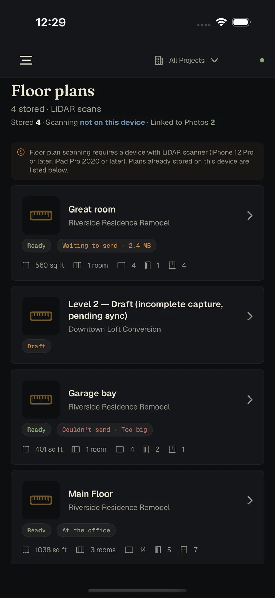
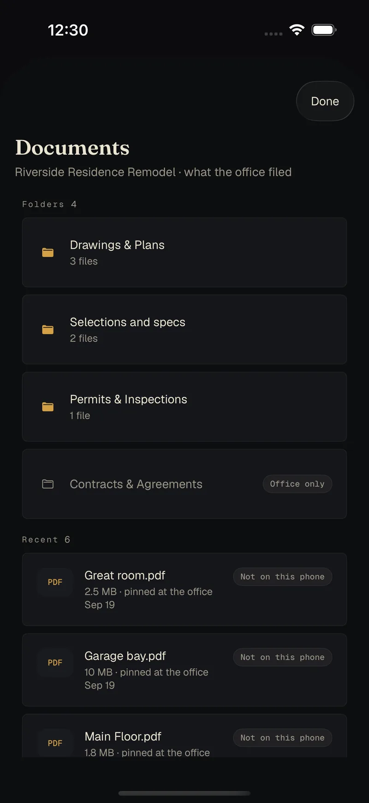
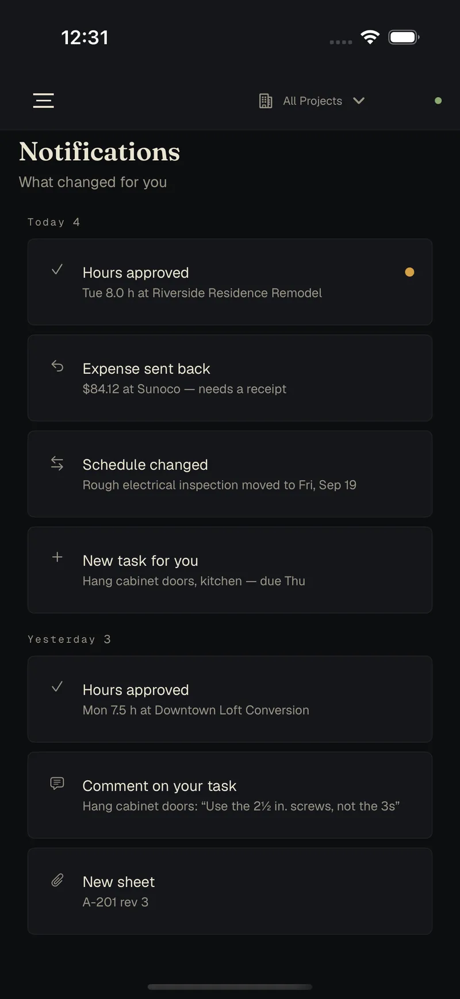
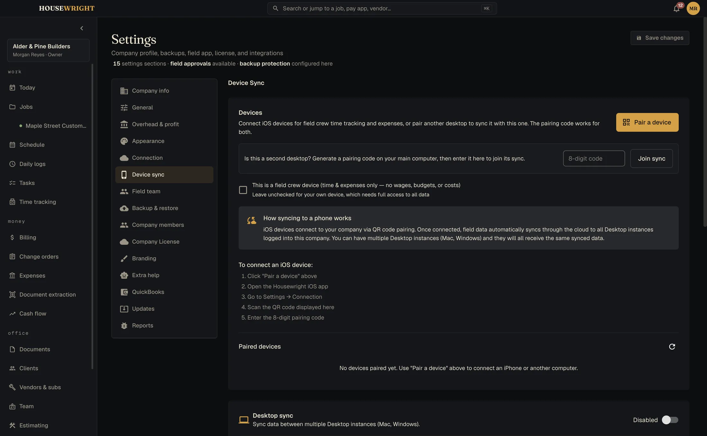
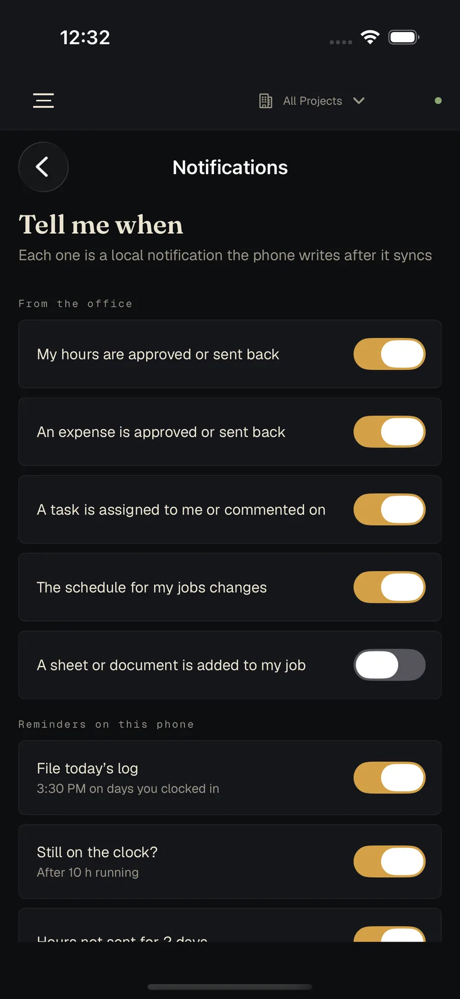
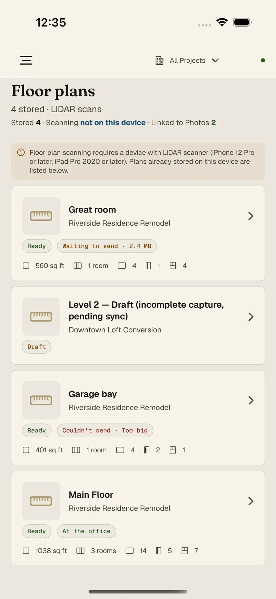
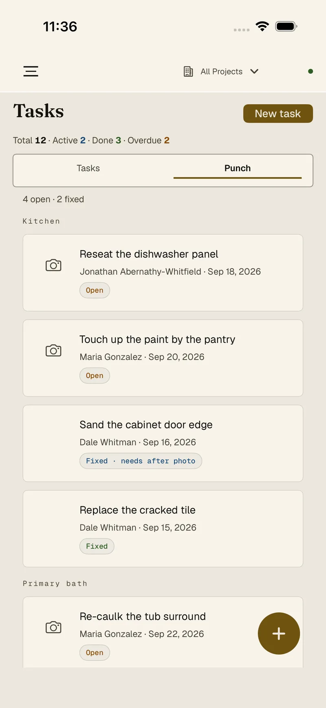

The field runs on iPhone. The books stay on your desk.
The crew clocks in, files the daily log, works the punch list and opens the current sheet. The office sees it in Housewright Desktop. It works whether or not there's signal.


Everything a carpenter needs, and nothing the office wouldn't hand over.
The clock
Clock in to a job, switch jobs, pause, clock out. Breaks and overtime handled, a whole crew entered at once if you run one. Hours go to the office for approval.
Tasks and punch
What's due, what's late, and the punch list grouped by room. Mark it fixed and the app asks for the after photo.
Daily logs
Trades on site, notes, photos. The weather fills itself in.
Photos
Shot or imported, filed to the job, sorted into albums, with before-and-after pairs.
Floor plans
Scan a room with the iPhone's LiDAR, get measurements and a plan, mark it up, send it to the office.
The current sheet
Drawings with their revision history and the office's markups, so nobody frames from Rev A.
Expenses
Amount, vendor, a photo of the receipt. The office decides which categories the crew can use, and reviews what comes in.
Who's who
The client, the subs, the office: call, text, email or directions in one tap, with the lockbox and parking notes where you'll look for them.




Your book stays on your machines. Sync only carries sealed envelopes.
The desktop keeps your whole book in one file on your own computer. Each phone keeps its own working copy. We don't keep a copy of your book. When the desk and a phone need to trade changes, the changes pass through a relay we run, and every one is sealed before it leaves the device.
Stored at each end
On the desk, one file on your computer. In the field, on the phone. Both keep working with no connection at all. The one thing that ever sits on our side in readable form is a client link you choose to publish, showing only what you picked, until it expires.
Sealed before it leaves
Each change is encrypted on the device with AES-256-GCM, using a key your own devices create when you pair them by scanning a code. That key never leaves them. The connection itself is encrypted on top of that.
What the relay can't read
The client, the address, the amount, the hours, the note. It sees that a sealed change of some kind went by, and when. We couldn't read your book if we wanted to, and neither could anyone who broke into the relay.
A mailbox, not an archive
Sealed changes are cleared once your devices have collected them. Only a short rolling window stays, still sealed, so a phone that's been switched off for a week can catch up.
What it costs
The relay is a server we run and pay for every month, so sync will be an optional monthly service for the shops that want their phones connected. It will be priced to cover that server, not to surprise you, and we'll publish the number before launch. Housewright Desktop works in full without it.


Even a notification carries no job data. It tells the phone to check in, and the phone decides what to say.


Readable on a roof at noon.
A sunlight palette for outdoors and a high-contrast one for anyone who wants it, with touch targets sized for a thumb in a glove.
Switches this whole site to the apps' sunlight palette.
One email when each one ships.
Calc is first, then Desktop and the Companion. We'll write when there is something you can install. No newsletter.